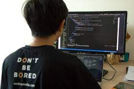

<!DOCTYPE html>
<html lang="en">
<head>
    <meta charset="UTF-8">
    <meta name="viewport" content="width=<he>, initial-scale=1.0">
    <title>Servicios/title>
    <link rel="stylesheet" type="text/css" href="style/hamburg2.css">
</head>
<body>
  <div id="container">

    <header>
     <div id="compania">   
    
    <span id="logotext">Tech Solutions</span>
    </div>

    <nav class="mn">
        <input type="checkbox" id="menu" />
        <label for="menu"></label>
    <ul>
        <li><a class="activo" href="hamburg3.html">Inicio</a></li>
        <li><a href="hamburg2.html">Servicios</a></li>
        <li><a href="style/loging.html">Dona ya!!</a></li>
    
    </ul>
   
    
    </nav>

    
    </header>
    


    <main>
    <section id="anuncio1">
        <section class="nota">
            <br>
            Brindar servicios a través de donativos, a alumnos de la universidad uam cuajimalpa de escasos recursos o que lo requieran.

        </section>
        <section  class="nota">
            <br>
            bindar un apoyo económico en forma de donación que muchas veces no se sabe en qué va a ser aprovechado, la organización brindará los servicios (habitación, transporte, comedor, brindar materiales), para que así el estudiante y el donador tengan la certeza de que los recursos serán utilizados de forma óptima. 

        </section>
        
        <section class="nota">
        <br>
Generar difusión a través de casos de éxito, gracias a las donaciones de personas físicas o morales.
    </section>
    </section>
    <section id="anuncio2">
        <div>
        <span class="titnegro">Contrata </span><span class="titmorado">Hoy!!</span>
        </div>
    </section>

    


    </main>
    <footer> 
           <span>Datos de Contacto:</span>
           <span>micorreo@instituto.com</span>
           <p>
            Av. Vasco de Quiroga No. 100.<br>
            Sanfa Fé, Cuajimalpa, CDMX.

           </p>


    </footer>
</div>
</body>


</html>
